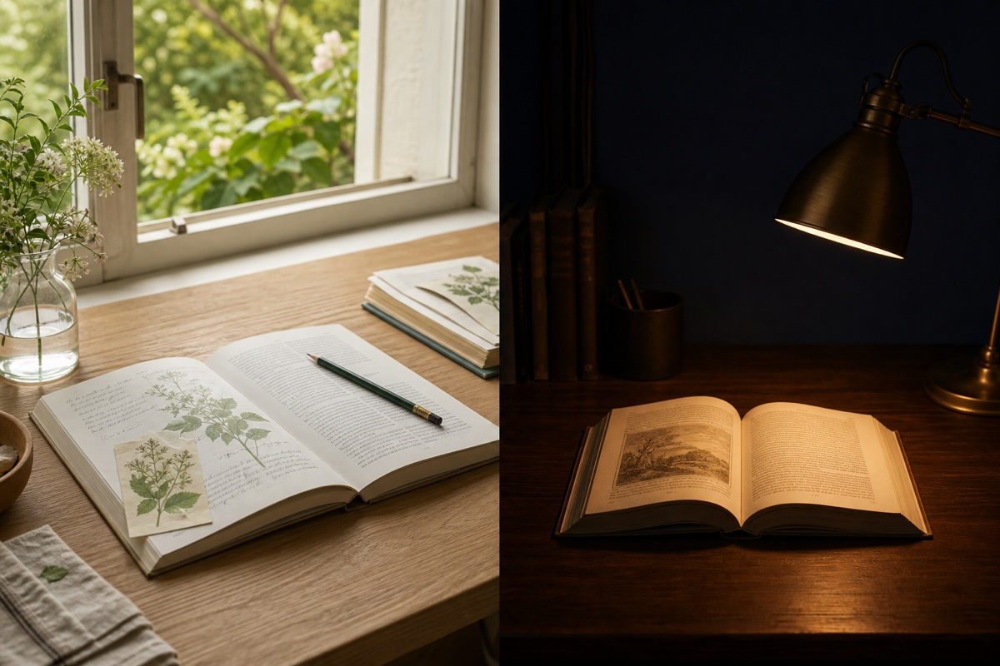

Field notes · daylight source
Chapter 04 · Living systems
The garden remembers every visitor.
Quiet desk · low-glare source
Chapter 04 · Focus passage
Read one line at the speed of attention.
Motion · reader mode clip
new mode expands from the human invocation point and withdraws to it